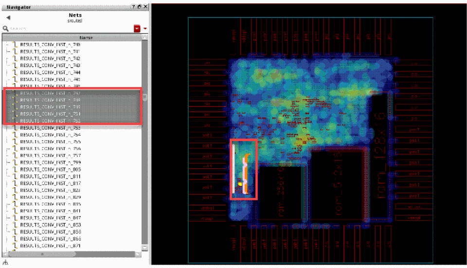

Finding and Displaying Nets in the Navigator
You can select nets from the Navigator assistant and have them displayed in the heat map. To do this:
- Open the Navigator assistant in Virtuoso by choosing Windows – Assistant – Navigator.
-
Click and select the nets from the Navigator assistant.
The following figure shows the selected nets in the Navigator assistant and how they are displayed together in the heat map.

Related Topics
Return to top